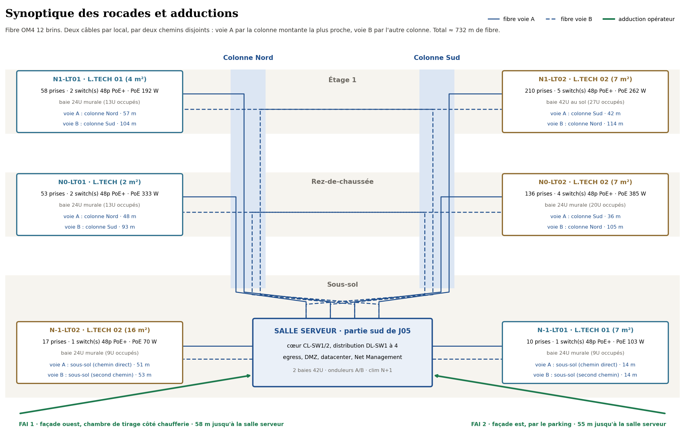
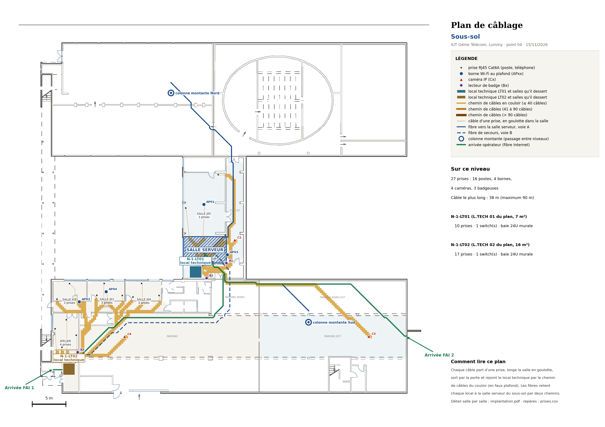
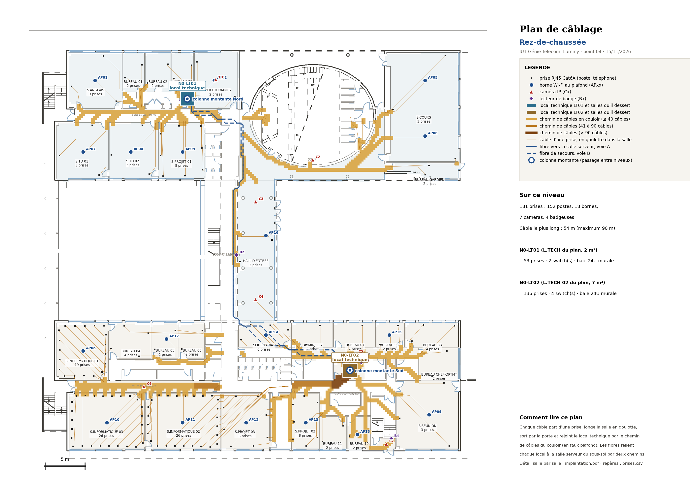
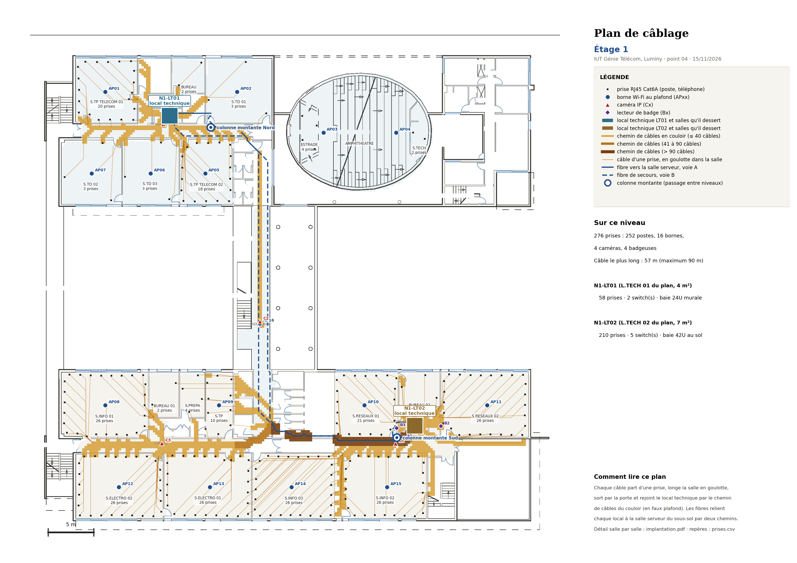

Site de Marseille · IUT Génie Télécom, Luminy · point 04 du cahier des charges · 15/11/2026
Où se trouve chaque élément, quelle salle est desservie par quel local technique, et par où passent les câbles et les fibres. Plans à l'échelle et repères dans plans/ et prises.csv.
Où : sous-sol, partie sud de la SALLE J05, cloisonnée sur environ 25 m², contre le local technique N-1-LT01 et le couloir CIRC 03. C'est le point le plus central du bâtiment : les fibres vers les étages y sont les plus courtes.
| Zone | Équipements installés dans la salle serveur |
|---|---|
| Egress / WAN | EL-RTR1, EL-RTR2 (Cisco Catalyst C8200L-1N-4T) · EL-FGT1, EL-FGT2 (FortiGate 120G) · EL-SW1, EL-SW2 (Cisco Catalyst C9200L-24T-4X-E) |
| Sécurité interne | EL-SNS1, EL-SNS2 (Stormshield SN710) · EL-SNS1, EL-SNS2 (Module d'extension 10G SFP+ pour SN710) |
| DMZ | DM-SW1, DM-SW2 (Cisco Catalyst C9200L-24T-4X-E) · DM-PVE1, DM-PVE2 (Dell PowerEdge R360 (Xeon E-2488 8 cœurs, 64 Go, 4x960 Go SSD ZFS, 2x10 GbE, double alim)) · DM-WITNESS (Dell PowerEdge R260 entrée de gamme (Xeon E-2414, 16 Go, 2x480 Go SSD)) |
| Cœur | CL-SW1, CL-SW2 (Cisco Catalyst C9500-16X-E) |
| Distribution | DL-SW1 à DL-SW4 (Cisco Catalyst C9500-16X-E) |
| Net Management | NM-SW1, NM-SW2 (Cisco Catalyst C9200L-24T-4X-E) · NM-PVE1, NM-PVE2 (Dell PowerEdge R660xs (2x Xeon Silver 4510, 256 Go, 4x1,92 To SSD ZFS miroir, 2x25 GbE) · NM-WITNESS (Dell PowerEdge R260 entrée de gamme (Xeon E-2414, 16 Go, 2x480 Go SSD)) · EL-SW, NM-SW, DM-SW (Kit de pile StackWise-80 C9200L (2 modules) · Services NM (LXC + Docker) (Kea, chrony, Unbound, LibreNMS, Grafana, Loki, rsyslog, snmptrapd, Teleport Community, NUT) |
| Datacenter | DT-SW1, DT-SW2 (Cisco Catalyst C9300X-12Y-E (10/25G)) · DT-PVE1, DT-PVE2 (Dell PowerEdge R660xs (1x Xeon Silver 4514Y 16 cœurs, 128 Go, 4x1,92 To SSD ZFS, 4x25 GbE)) · Licences serveurs Windows (Windows Server 2025 Standard 16 cœurs (AD, DHCP, NPS/RADIUS)) · Licences d'accès (CAL utilisateur Windows Server (tarif Éducation)) · DT-BKP1 (Serveur de sauvegarde Proxmox Backup Server (Dell R760xd2, ~100 To bruts)) · DT-BKP1 (Disque externe 24 To pour datastore amovible PBS) · DT-BKP1 (Coffre ignifuge pour supports de sauvegarde) |
Aménagement : 2 baies 42U, onduleurs en double alimentation A/B, climatisation de précision N+1, contrôle d'accès par badge (B), caméra (C). Sous-sol : plancher technique et détection de fuite d'eau à prévoir, cloison coupe-feu.
| Local | Où | Surface | Baie | Switchs | Prises | Salles desservies |
|---|---|---|---|---|---|---|
| N-1-LT01 | Sous-sol, salle « L.TECH 01 » du plan, à côté de SAS 01 et SALLE SERVEUR | 7 m² | 24U murale (9U) | 1 | 10 | SALLE J05 |
| N-1-LT02 | Sous-sol, salle « L.TECH 02 » du plan, à côté de ATELIER et CIRC 04 | 16 m² | 24U murale (9U) | 1 | 17 | ATELIER, SALLE J02, SALLE J03, SALLE J04 |
| N0-LT01 | Rez-de-chaussée, salle « L.TECH » du plan, à côté de BUREAU 03 et FOYER ETUDIANTS | 2 m² | 24U murale (13U) | 2 | 53 | BUREAU 01, BUREAU 02, BUREAU 03, BUREAU GARDIEN, ESTRADE, FOYER ETUDIANTS, HALL D'ENTREE, S.ANGLAIS, S.COURS, S.PROJET 01, S.TD 01, S.TD 02, S.TECH |
| N0-LT02 | Rez-de-chaussée, salle « L.TECH 02 » du plan, à côté de CIRCULATION 04 et CIRCULATION 03 | 7 m² | 24U murale (20U) | 4 | 136 | ADMIN/RES, BUREAU 04, BUREAU 05, BUREAU 06, BUREAU 07, BUREAU 08, BUREAU 09, BUREAU 10, BUREAU 11, BUREAU CHEF-DPTMT, S.INFORMATIQUE 01, S.INFORMATIQUE 02, S.INFORMATIQUE 03, S.PROJET 02, S.PROJET 03, S.REUNION, SECRETARIAT |
| N1-LT01 | Étage 1, salle « L.TECH 01 » du plan, à côté de CIRCULATION 01 et BUREAU | 4 m² | 24U murale (13U) | 2 | 58 | BUREAU, S.TD 01, S.TD 02, S.TD 03, S.TP TELECOM 01, S.TP TELECOM 02 |
| N1-LT02 | Étage 1, salle « L.TECH 02 » du plan, à côté de CIRC 05 et BUREAU 02 | 7 m² | 42U au sol (27U) | 5 | 210 | BUREAU 01, BUREAU 02, S RESEAUX 02, S.ELECTRO 01, S.ELECTRO 02, S.INFO 01, S.INFO 02, S.INFO 03, S.PREPA, S.RESEAUX 01, S.TP |
Le local N0-LT01 (RDC nord) est un placard d'environ 2 m² : baie murale, porte ventilée. Le local N1-LT02 dessert toute l'aile sud de l'étage (salles de TP) : baie au sol 42U.
Colonne Nord : part du vide sanitaire du sous-sol, monte à l'aplomb du local N0-LT01 (RDC, aile nord) puis jusqu'à l'étage. Colonne Sud : part du plafond du parking, monte à l'aplomb des locaux N0-LT02 et N1-LT02 (aile sud). Chaque local a sa voie A par la colonne la plus proche et sa voie B par l'autre : une colonne coupée n'isole aucun local.
| Local | Voie | Chemin de la fibre (depuis la salle serveur) | Longueur |
|---|---|---|---|
| N-1-LT01 | A | SALLE SERVEUR → L.TECH 01 → N-1-LT01 | 14 m |
| N-1-LT01 | B | SALLE SERVEUR → L.TECH 01 → N-1-LT01 | 14 m |
| N-1-LT02 | A | SALLE SERVEUR → CIRC 03 → PARKING NORD → PARKING → L.TECH 02 → N-1-LT02 | 51 m |
| N-1-LT02 | B | SALLE SERVEUR → CIRC 03 → PARKING NORD → PARKING → L.TECH 02 → N-1-LT02 | 53 m |
| N0-LT01 | A | SALLE SERVEUR → CIRC 02 → CIRCULATION 01 → VIDE SANITAIRE 02 → VIDE SANITAIRE 01 → colonne Nord (montée 3.5 m) → L.TECH → N0-LT01 | 48 m |
| N0-LT01 | B | SALLE SERVEUR → CIRC 03 → PARKING NORD → PARKING NORD EST → colonne Sud (montée 3.5 m) → L.TECH 02 → CIRCULATION 04 → SOUS-PASSERELLE → DGMT → PL.ELEC → L.TECH → N0-LT01 | 93 m |
| N0-LT02 | A | SALLE SERVEUR → CIRC 03 → PARKING NORD → PARKING NORD EST → colonne Sud (montée 3.5 m) → L.TECH 02 → N0-LT02 | 36 m |
| N0-LT02 | B | SALLE SERVEUR → CIRC 02 → CIRCULATION 01 → VIDE SANITAIRE 02 → VIDE SANITAIRE 01 → colonne Nord (montée 3.5 m) → L.TECH → PL.ELEC → DGMT → SOUS-PASSERELLE → CIRCULATION 04 → L.TECH 02 → N0-LT02 | 105 m |
| N1-LT01 | A | SALLE SERVEUR → CIRC 02 → CIRCULATION 01 → VIDE SANITAIRE 02 → VIDE SANITAIRE 01 → colonne Nord (montée 7.0 m) → RGMT 01 → L.TECH 01 → N1-LT01 | 57 m |
| N1-LT01 | B | SALLE SERVEUR → CIRC 03 → PARKING NORD → PARKING NORD EST → colonne Sud (montée 7.0 m) → CIRC 05 → PASSERELLE → CIRC 02 → CIRCULATION 01 → L.TECH 01 → N1-LT01 | 104 m |
| N1-LT02 | A | SALLE SERVEUR → CIRC 03 → PARKING NORD → PARKING NORD EST → colonne Sud (montée 7.0 m) → L.TECH 02 → N1-LT02 | 42 m |
| N1-LT02 | B | SALLE SERVEUR → CIRC 02 → CIRCULATION 01 → VIDE SANITAIRE 02 → VIDE SANITAIRE 01 → colonne Nord (montée 7.0 m) → CIRCULATION 01 → CIRC 02 → PASSERELLE → CIRC 05 → L.TECH 02 → N1-LT02 | 114 m |
| Opérateur | Entrée dans le bâtiment | Chemin jusqu'à la salle serveur | Longueur |
|---|---|---|---|
| FAI 1 | façade ouest, chambre de tirage côté chaufferie | chambre de tirage → L.SERVICE → L.TECH 02 → PARKING → PARKING NORD → CIRC 03 → SALLE SERVEUR | 58 m |
| FAI 2 | façade est, par le parking | chambre de tirage → PARKING EST → PARKING NORD EST → PARKING NORD → CIRC 03 → SALLE SERVEUR | 55 m |


| Salle | Usage | Prises | Équipements | Local | Les câbles passent par | Plus long |
|---|---|---|---|---|---|---|
| ATELIER | atelier | 4 | N-1-LT02 | L.TECH 02 | 13 m | |
| SALLE J02 | salle de cours/TD | 3 | N-1-LT02 | CIRC 05 → PARKING → L.TECH 02 | 22 m | |
| SALLE J03 | salle de cours/TD | 3 | AP04 | N-1-LT02 | CIRC 05 → CIRC 04 → PARKING → L.TECH 02 | 22 m |
| SALLE J04 | salle de cours/TD | 3 | N-1-LT02 | CIRC 05 → PARKING → L.TECH 02 | 26 m | |
| SALLE J05 | salle de cours/TD | 3 | AP01 | N-1-LT01 | SALLE SERVEUR → L.TECH 01 | 26 m |
| SALLE SERVEUR | salle serveur | — | C2, B1 | N-1-LT01 | L.TECH 01 | 11 m |
| CIRC 02 | circulation | — | AP03, C1 | N-1-LT01 | CIRC 03 → L.TECH 01 | 15 m |
| CIRC 05 | circulation | — | AP02 | N-1-LT02 | PARKING → L.TECH 02 | 18 m |
| L.TECH 01 | local technique | — | B2 | N-1-LT01 | — | 7 m |
| L.TECH 02 | local technique | — | B3 | N-1-LT02 | — | 9 m |
| PARKING | parking | — | C4 | N-1-LT02 | L.TECH 02 | 17 m |
| PARKING EST | parking | — | C3 | N-1-LT01 | PARKING NORD EST → PARKING NORD → CIRC 03 → L.TECH 01 | 38 m |

| Salle | Usage | Prises | Équipements | Local | Les câbles passent par | Plus long |
|---|---|---|---|---|---|---|
| ADMIN/RES | bureau | 2 | N0-LT02 | CIRCULATION 04 → L.TECH 02 | 14 m | |
| BUREAU 01 | bureau | 2 | · 1 tél. IP | N0-LT01 | PL.ELEC → L.TECH | 18 m |
| BUREAU 02 | bureau | 2 | · 1 tél. IP | N0-LT01 | L.TECH | 16 m |
| BUREAU 03 | bureau | 2 | · 1 tél. IP | N0-LT01 | L.TECH | 10 m |
| BUREAU 04 | bureau | 4 | · 1 tél. IP | N0-LT02 | L.SERVICE 03 → CIRCULATION 04 → L.TECH 02 | 46 m |
| BUREAU 05 | bureau | 2 | AP17 · 1 tél. IP | N0-LT02 | ASC → CIRCULATION 04 → L.TECH 02 | 33 m |
| BUREAU 06 | bureau | 2 | · 1 tél. IP | N0-LT02 | L.SERVICE 03 → CIRCULATION 04 → L.TECH 02 | 30 m |
| BUREAU 07 | bureau | 2 | · 1 tél. IP | N0-LT02 | CIRCULATION 04 → L.TECH 02 | 12 m |
| BUREAU 08 | bureau | 2 | AP15 · 1 tél. IP | N0-LT02 | CIRCULATION 04 → L.TECH 02 | 17 m |
| BUREAU 09 | bureau | 4 | · 1 tél. IP | N0-LT02 | CIRCULATION 04 → L.TECH 02 | 22 m |
| BUREAU 10 | bureau | 2 | AP18 · 1 tél. IP | N0-LT02 | ESC 02 → CIRCULATION 03 → L.TECH 02 | 16 m |
| BUREAU 11 | bureau | 2 | · 1 tél. IP | N0-LT02 | CIRCULATION 03 → L.TECH 02 | 17 m |
| BUREAU CHEF-DPTMT | bureau | 2 | · 1 tél. IP | N0-LT02 | CIRCULATION 04 → L.TECH 02 | 20 m |
| BUREAU GARDIEN | bureau | 2 | · 1 tél. IP | N0-LT01 | DGMT → PL.ELEC → L.TECH | 44 m |
| FOYER ETUDIANTS | vie étudiante | 2 | AP02, C1 | N0-LT01 | L.TECH | 14 m |
| HALL D'ENTREE | vie étudiante | 2 | AP16, C3, B2, C4 | N0-LT01 | SOUS-PASSERELLE → DGMT → PL.ELEC → L.TECH | 36 m |
| S.ANGLAIS | salle de cours/TD | 3 | AP01 | N0-LT01 | RGMT 01 → PL.ELEC → L.TECH | 24 m |
| S.COURS | salle de cours/TD | 3 | AP05, AP06 | N0-LT01 | DGMT → PL.ELEC → L.TECH | 54 m |
| S.INFORMATIQUE 01 | salle de TP | 19 | AP08 | N0-LT02 | CIRCULATION 02 → CIRCULATION 03 → L.TECH 02 | 50 m |
| S.INFORMATIQUE 02 | salle de TP | 26 | AP11 | N0-LT02 | CIRCULATION 02 → CIRCULATION 03 → L.TECH 02 | 41 m |
| S.INFORMATIQUE 03 | salle de TP | 26 | AP10 | N0-LT02 | CIRCULATION 02 → CIRCULATION 03 → L.TECH 02 | 53 m |
| S.PROJET 01 | salle de projet | 8 | AP03 | N0-LT01 | PL.ELEC → L.TECH | 18 m |
| S.PROJET 02 | salle de projet | 8 | AP13 | N0-LT02 | CIRCULATION 03 → L.TECH 02 | 22 m |
| S.PROJET 03 | salle de projet | 8 | AP12 | N0-LT02 | CIRCULATION 03 → L.TECH 02 | 27 m |
| S.REUNION | salle de cours/TD | 3 | AP09 | N0-LT02 | CIRCULATION 03 → L.TECH 02 | 24 m |
| S.TD 01 | salle de cours/TD | 3 | AP07 | N0-LT01 | PL.ELEC → L.TECH | 27 m |
| S.TD 02 | salle de cours/TD | 3 | AP04 | N0-LT01 | PL.ELEC → L.TECH | 22 m |
| SECRETARIAT | accueil | 6 | AP14 · 1 tél. IP | N0-LT02 | CIRCULATION 04 → L.TECH 02 | 22 m |
| CIRCULATION 02 | circulation | — | C6 | N0-LT02 | CIRCULATION 03 → L.TECH 02 | 35 m |
| CIRCULATION 04 | circulation | — | C5 | N0-LT02 | L.TECH 02 | 8 m |
| DGMT | circulation | — | C2 | N0-LT01 | PL.ELEC → L.TECH | 28 m |
| ENTREE | circulation | — | C7, B4 | N0-LT02 | ESC 01 → ESC 02 → CIRCULATION 03 → L.TECH 02 | 20 m |
| L.TECH | local technique | — | B1 | N0-LT01 | — | 6 m |
| L.TECH 02 | local technique | — | B3 | N0-LT02 | CIRCULATION 04 | 7 m |

| Salle | Usage | Prises | Équipements | Local | Les câbles passent par | Plus long |
|---|---|---|---|---|---|---|
| AMPHITHEATRE | amphithéâtre | — | AP03, AP04 | N0-LT01 | RGMT 02 → PL.ELEC → L.TECH | 44 m |
| BUREAU | bureau | 2 | · 1 tél. IP | N1-LT01 | CIRCULATION 01 → L.TECH 01 | 13 m |
| BUREAU 01 | bureau | 2 | · 1 tél. IP | N1-LT02 | RGMT 02 → PASSERELLE → CIRC 05 → L.TECH 02 | 44 m |
| BUREAU 02 | bureau | 4 | · 1 tél. IP | N1-LT02 | L.TECH 02 | 12 m |
| ESTRADE | amphithéâtre | 4 | N0-LT01 | RGMT 02 → PL.ELEC → L.TECH | 21 m | |
| S RESEAUX 02 | salle de TP | 26 | AP11, B2 | N1-LT02 | CIRC 05 → L.TECH 02 | 20 m |
| S.ELECTRO 01 | salle de TP | 26 | AP13 | N1-LT02 | PL 03 PL 04 → PASSERELLE → CIRC 05 → L.TECH 02 | 46 m |
| S.ELECTRO 02 | salle de TP | 26 | AP12 | N1-LT02 | PL 03 PL 04 → PASSERELLE → CIRC 05 → L.TECH 02 | 57 m |
| S.INFO 01 | salle de TP | 26 | AP08 | N1-LT02 | PL 03 PL 04 → PASSERELLE → CIRC 05 → L.TECH 02 | 57 m |
| S.INFO 02 | salle de TP | 26 | AP15 | N1-LT02 | CIRC 05 → L.TECH 02 | 25 m |
| S.INFO 03 | salle de TP | 26 | AP14 | N1-LT02 | CIRC 05 → L.TECH 02 | 29 m |
| S.PREPA | préparation | 4 | N1-LT02 | RGMT 02 → PASSERELLE → CIRC 05 → L.TECH 02 | 39 m | |
| S.RESEAUX 01 | salle de TP | 21 | AP10, B3 | N1-LT02 | L.TECH 02 | 21 m |
| S.TD 01 | salle de cours/TD | 3 | AP02 | N1-LT01 | RGMT 01 → L.TECH 01 | 19 m |
| S.TD 02 | salle de cours/TD | 3 | AP07 | N1-LT01 | CIRCULATION 01 → L.TECH 01 | 22 m |
| S.TD 03 | salle de cours/TD | 3 | AP06 | N1-LT01 | CIRCULATION 01 → L.TECH 01 | 17 m |
| S.TECH | amphithéâtre | 2 | N0-LT01 | DGMT → PL.ELEC → L.TECH | 44 m | |
| S.TP | salle de TP | 10 | AP09 | N1-LT02 | RGMT 02 → PASSERELLE → CIRC 05 → L.TECH 02 | 36 m |
| S.TP TELECOM 01 | salle de TP | 20 | AP01 | N1-LT01 | CIRCULATION 01 → L.TECH 01 | 22 m |
| S.TP TELECOM 02 | salle de TP | 18 | AP05 | N1-LT01 | CIRCULATION 01 → L.TECH 01 | 19 m |
| CIRC 04 | circulation | — | C3 | N1-LT02 | PL 03 PL 04 → PASSERELLE → CIRC 05 → L.TECH 02 | 39 m |
| CIRC 05 | circulation | — | C4 | N1-LT02 | L.TECH 02 | 9 m |
| CIRCULATION 01 | circulation | — | C1 | N1-LT01 | L.TECH 01 | 7 m |
| L.TECH 01 | local technique | — | B1 | N1-LT01 | — | 6 m |
| L.TECH 02 | local technique | — | B4 | N1-LT02 | — | 7 m |
| PASSERELLE | circulation | — | AP16, C2 | N1-LT01 | CIRC 02 → CIRCULATION 01 → L.TECH 01 | 39 m |
câblée depuis N0 (pas d'accès sur son niveau), +3.5 m de montée : AMPHITHEATRE, ESTRADE, S.TECH.
Bornes placées d'après l'étude Wi-Fi prédictive (wifi/) : au plafond, alimentées par leur câble (PoE+). Caméras et badgeuses sur des réseaux séparés (VLAN vidéo et contrôle d'accès).
| Repère | Niveau | Salle | Détail | Local | Câble |
|---|---|---|---|---|---|
| AP01 | Sous-sol | SALLE J05 | AP-N-1-01 (canal 140) | N-1-LT01 | 17 m |
| AP02 | Sous-sol | CIRC 05 | AP-N-1-02 (canal 60) | N-1-LT02 | 18 m |
| AP03 | Sous-sol | CIRC 02 | AP-N-1-03 (canal 149) | N-1-LT01 | 13 m |
| AP04 | Sous-sol | SALLE J03 | AP-N-1-04 (canal 116) | N-1-LT02 | 22 m |
| AP01 | Rez-de-chaussée | S.ANGLAIS | AP-N0-01 (canal 52) | N0-LT01 | 20 m |
| AP02 | Rez-de-chaussée | FOYER ETUDIANTS | AP-N0-02 (canal 157) | N0-LT01 | 10 m |
| AP03 | Rez-de-chaussée | S.PROJET 01 | AP-N0-03 (canal 44) | N0-LT01 | 14 m |
| AP04 | Rez-de-chaussée | S.TD 02 | AP-N0-04 (canal 108) | N0-LT01 | 16 m |
| AP05 | Rez-de-chaussée | S.COURS | AP-N0-05 (canal 36) | N0-LT01 | 50 m |
| AP06 | Rez-de-chaussée | S.COURS | AP-N0-06 (canal 44) | N0-LT01 | 45 m |
| AP07 | Rez-de-chaussée | S.TD 01 | AP-N0-07 (canal 124) | N0-LT01 | 23 m |
| AP08 | Rez-de-chaussée | S.INFORMATIQUE 01 | AP-N0-08 (canal 100) | N0-LT02 | 46 m |
| AP09 | Rez-de-chaussée | S.REUNION | AP-N0-09 (canal 157) | N0-LT02 | 19 m |
| AP10 | Rez-de-chaussée | S.INFORMATIQUE 03 | AP-N0-10 (canal 157) | N0-LT02 | 42 m |
| AP11 | Rez-de-chaussée | S.INFORMATIQUE 02 | AP-N0-11 (canal 52) | N0-LT02 | 34 m |
| AP12 | Rez-de-chaussée | S.PROJET 03 | AP-N0-12 (canal 124) | N0-LT02 | 23 m |
| AP13 | Rez-de-chaussée | S.PROJET 02 | AP-N0-13 (canal 100) | N0-LT02 | 16 m |
| AP14 | Rez-de-chaussée | SECRETARIAT | AP-N0-14 (canal 44) | N0-LT02 | 19 m |
| AP15 | Rez-de-chaussée | BUREAU 08 | AP-N0-15 (canal 108) | N0-LT02 | 14 m |
| AP16 | Rez-de-chaussée | HALL D'ENTREE | AP-N0-16 (canal 52) | N0-LT01 | 35 m |
| AP17 | Rez-de-chaussée | BUREAU 05 | AP-N0-17 (canal 36) | N0-LT02 | 32 m |
| AP18 | Rez-de-chaussée | BUREAU 10 | AP-N0-18 (canal 36) | N0-LT02 | 16 m |
| AP01 | Étage 1 | S.TP TELECOM 01 | AP-N1-01 (canal 132) | N1-LT01 | 14 m |
| AP02 | Étage 1 | S.TD 01 | AP-N1-02 (canal 60) | N1-LT01 | 14 m |
| AP03 | Étage 1 | AMPHITHEATRE | AP-N1-03 (canal 60) | N0-LT01 | 21 m |
| AP04 | Étage 1 | AMPHITHEATRE | AP-N1-04 (canal 132) | N0-LT01 | 44 m |
| AP05 | Étage 1 | S.TP TELECOM 02 | AP-N1-05 (canal 116) | N1-LT01 | 14 m |
| AP06 | Étage 1 | S.TD 03 | AP-N1-06 (canal 149) | N1-LT01 | 14 m |
| AP07 | Étage 1 | S.TD 02 | AP-N1-07 (canal 140) | N1-LT01 | 18 m |
| AP08 | Étage 1 | S.INFO 01 | AP-N1-08 (canal 132) | N1-LT02 | 50 m |
| AP09 | Étage 1 | S.TP | AP-N1-09 (canal 60) | N1-LT02 | 32 m |
| AP10 | Étage 1 | S.RESEAUX 01 | AP-N1-10 (canal 116) | N1-LT02 | 12 m |
| AP11 | Étage 1 | S RESEAUX 02 | AP-N1-11 (canal 140) | N1-LT02 | 15 m |
| AP12 | Étage 1 | S.ELECTRO 02 | AP-N1-12 (canal 149) | N1-LT02 | 46 m |
| AP13 | Étage 1 | S.ELECTRO 01 | AP-N1-13 (canal 140) | N1-LT02 | 36 m |
| AP14 | Étage 1 | S.INFO 03 | AP-N1-14 (canal 132) | N1-LT02 | 23 m |
| AP15 | Étage 1 | S.INFO 02 | AP-N1-15 (canal 60) | N1-LT02 | 15 m |
| AP16 | Étage 1 | PASSERELLE | AP-N1-16 (canal 132) | N1-LT01 | 39 m |
| C1 | Sous-sol | CIRC 02 | caméra IP | N-1-LT01 | 15 m |
| C2 | Sous-sol | SALLE SERVEUR | caméra IP | N-1-LT01 | 9 m |
| C3 | Sous-sol | PARKING EST | caméra IP | N-1-LT01 | 38 m |
| C4 | Sous-sol | PARKING | caméra IP | N-1-LT02 | 17 m |
| C1 | Rez-de-chaussée | FOYER ETUDIANTS | caméra IP | N0-LT01 | 10 m |
| C2 | Rez-de-chaussée | DGMT | caméra IP | N0-LT01 | 28 m |
| C3 | Rez-de-chaussée | HALL D'ENTREE | caméra IP | N0-LT01 | 26 m |
| C4 | Rez-de-chaussée | HALL D'ENTREE | caméra IP | N0-LT02 | 23 m |
| C5 | Rez-de-chaussée | CIRCULATION 04 | caméra IP | N0-LT02 | 8 m |
| C6 | Rez-de-chaussée | CIRCULATION 02 | caméra IP | N0-LT02 | 35 m |
| C7 | Rez-de-chaussée | ENTREE | caméra IP | N0-LT02 | 20 m |
| C1 | Étage 1 | CIRCULATION 01 | caméra IP | N1-LT01 | 7 m |
| C2 | Étage 1 | PASSERELLE | caméra IP | N1-LT01 | 39 m |
| C3 | Étage 1 | CIRC 04 | caméra IP | N1-LT02 | 39 m |
| C4 | Étage 1 | CIRC 05 | caméra IP | N1-LT02 | 9 m |
| B1 | Sous-sol | SALLE SERVEUR | lecteur de badge | N-1-LT01 | 11 m |
| B2 | Sous-sol | L.TECH 01 | lecteur de badge | N-1-LT01 | 7 m |
| B3 | Sous-sol | L.TECH 02 | lecteur de badge | N-1-LT02 | 9 m |
| B1 | Rez-de-chaussée | L.TECH | lecteur de badge | N0-LT01 | 6 m |
| B2 | Rez-de-chaussée | HALL D'ENTREE | lecteur de badge | N0-LT01 | 34 m |
| B3 | Rez-de-chaussée | L.TECH 02 | lecteur de badge | N0-LT02 | 7 m |
| B4 | Rez-de-chaussée | ENTREE | lecteur de badge | N0-LT02 | 20 m |
| B1 | Étage 1 | L.TECH 01 | lecteur de badge | N1-LT01 | 6 m |
| B2 | Étage 1 | S RESEAUX 02 | lecteur de badge | N1-LT02 | 8 m |
| B3 | Étage 1 | S.RESEAUX 01 | lecteur de badge | N1-LT02 | 7 m |
| B4 | Étage 1 | L.TECH 02 | lecteur de badge | N1-LT02 | 7 m |
prises.csv.À valider avec le client : emplacement des chambres de tirage des opérateurs, passage en vide sanitaire et au plafond du parking, salle serveur dans J05, mesure Wi-Fi sur site.